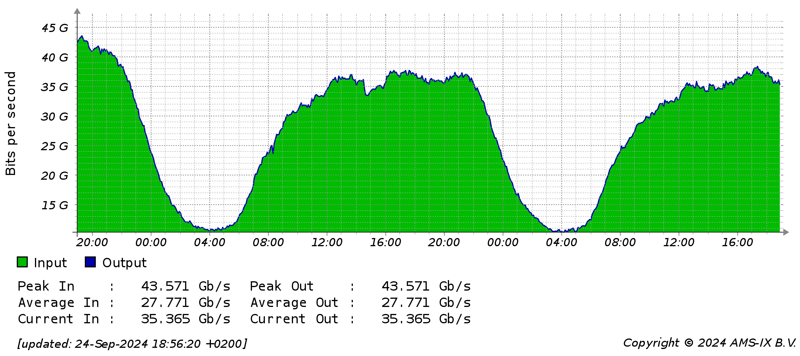
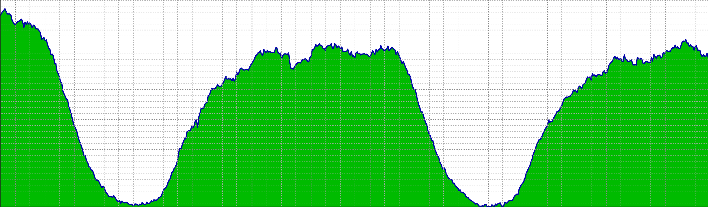
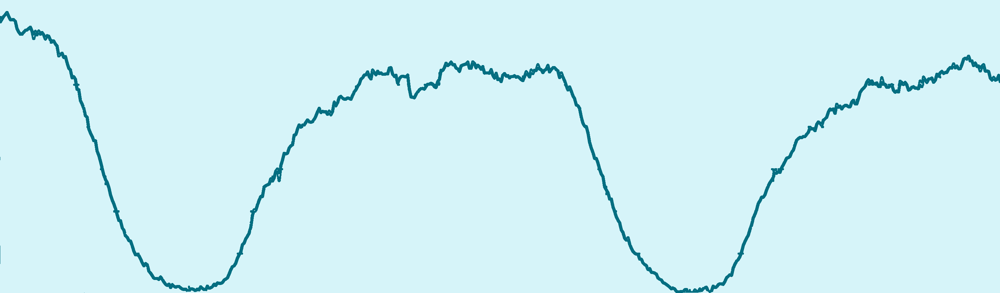
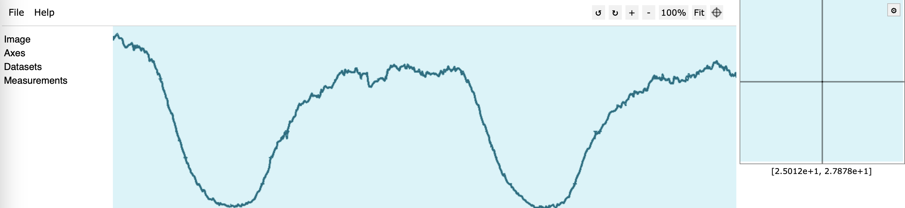
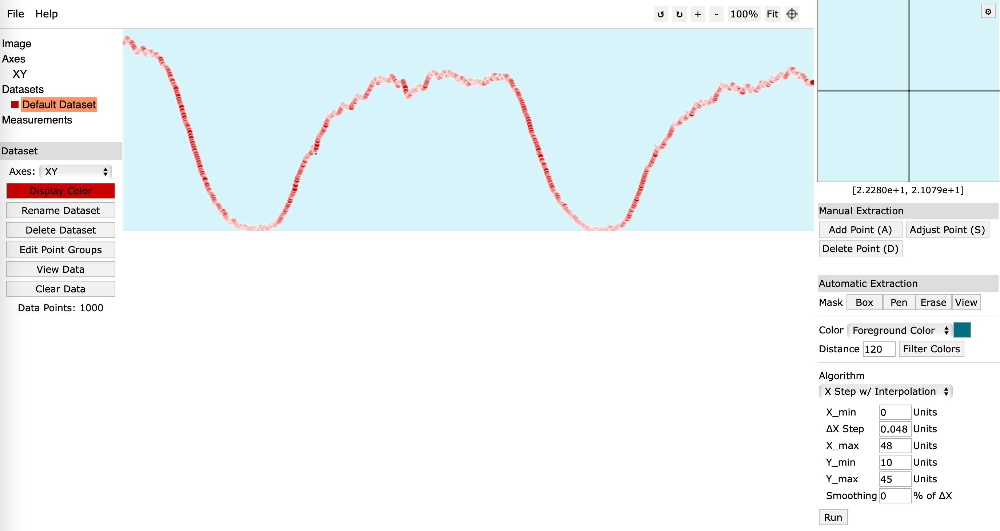

Datasets
The datasets module provides collected network traffic datasets.
Network operators often collect data about traffic generated by their customers. However, due to legal aspects, exact values are not shared with the public. However, the community can access averaged or summary data presented in a form of a plots. This module provides a set of datasets recreated from graphical plots which can be further resampled and regenerated using Traffic Weaver.
The .sandvine.py module allows to load the Sandvine datasets that are shipped with the code. Sandvine datasets are based on Sandvine report [1]. The report includes information about daily traffic patterns of various network-based applications, e.g., TikTok, YouTube, Zoom, etc., averaged over multiple large networks. The report presents the data as bar plots of traffic averaged in each hour of the day. Other dataset modules allow to download datasets stored in external repository.
List of datasets
Collecting new datasets
Due to limited access to real data, it is hard to collect datasets. However, various sites provides graphical insights about traffic statistics. Therefore, datasets can be collected based on data from graphical plots. One of the free tools that allows mapping image to plot is WebPlotDigitizer (version 4.8) [5]. Such tool requires image preprocessing. Below description is based on GIMP [6], however, any other image manipulation tool can be used for that purpose.
Exemplary process of collecting datasets from plotted images of AMS-IX [2]. is as follows. First, an image with a data is saved.
{kind=link}
Next, its content is cropped using any image manipulation software such that only data is visible.
{kind=link}
Data on the plot can be selected with fuzzy selection tool. Such tool should select areas based on color similarity according to specified threshold. Next border is added to that selection and it is painted with dark blue color using bucket tool. The selection is inverted, and rest of the image is colored with light blue color (as using different color. Any wrongly detected parts after painting the border can be removed with the eraser/pencil tool.
{kind=link}
Prepared image is loaded to plot detection software. Such software detects plot values based on four known points that forms the coordinate system. In this example, image was cropped according to the axes, so the image corners can be selected.
{kind=link}
Next, plot values are automatically mapped using interpolation based on fixed step on x-axis.
{kind=link}
Obtained result can be exported to csv file, loaded to Traffic Weaver and further processed.